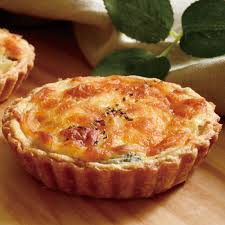

法國的起司 (Fromage)
也是非常有名，種類繁多。
依型態分有新鮮而硬的、半硬的、硬的、藍莓的和煙熏的五大類;
通常食用起司時會附帶麵包、乾果 (例如核桃等)、葡萄等。
法國菜在享用時非常注重餐具的使用，無論是刀、叉、盤或是酒杯，因為這些均可襯托出法國菜高貴之氣質。
2012年，法國受經濟不景氣的衝擊及年輕人飲食習慣的改變，
傳統昂貴而精緻的美食(Gastronomie)整體的價格及水准上皆有日益下滑的趨勢。
越來越少的法國人願意花天文數字般的價格只為了吃一餐。法國的兩大權威美食評論寶典《米其林》(Michelin)
以及《高特米優》(Gaultmillau)自年前開始倡導物美價廉的新飲食文化，
很多過去高不可攀的餐廳都試著大幅降價以吸引更多的食客前往.

連到首頁
連到第2頁
連到第3頁
連到第5頁